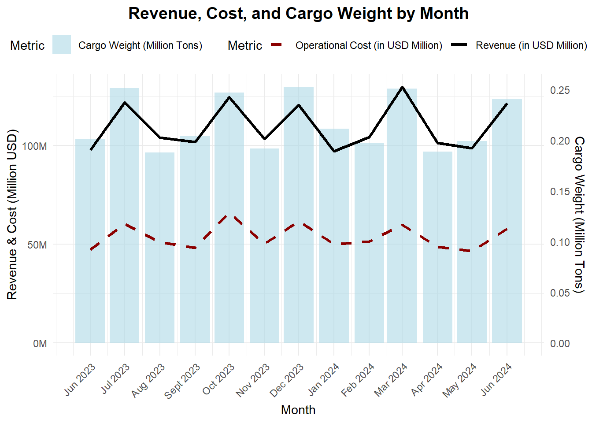
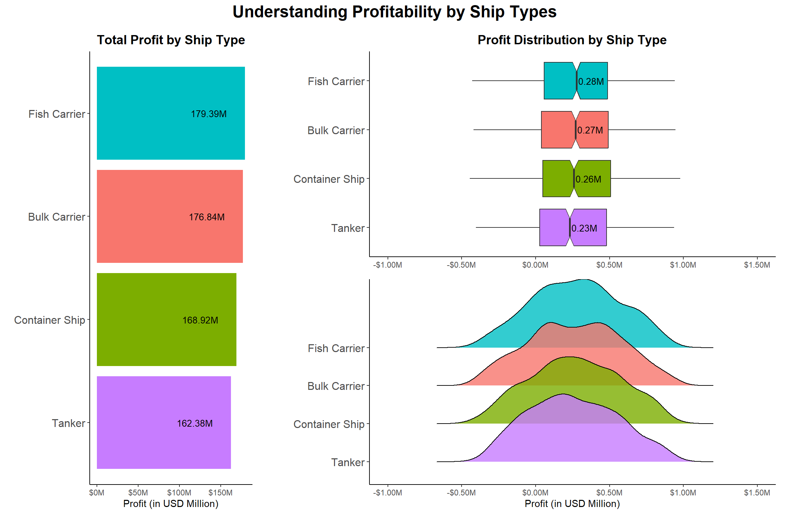
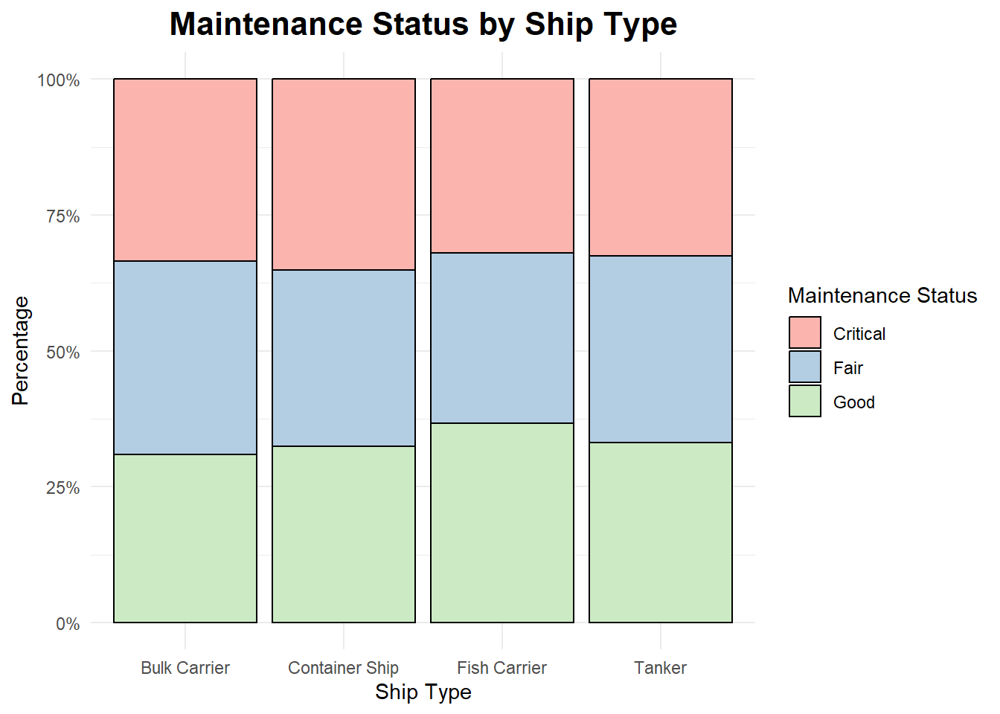
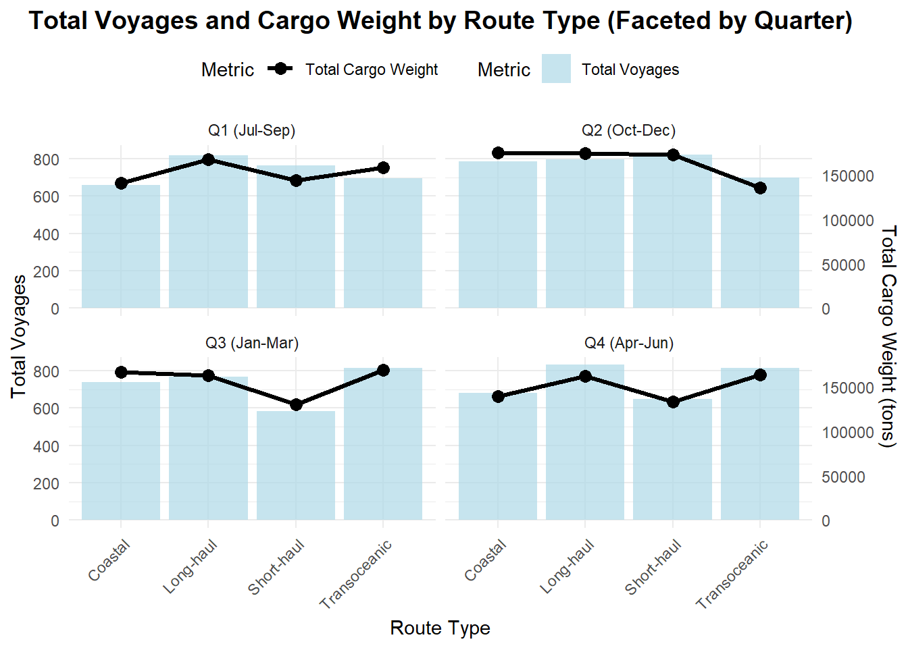

pacman::p_load(plotly, ggthemes, ggridges,
patchwork, ggplot2, tidyverse, dplyr, lubridate, ggdist) Take-Home Exercise 1.0: Creating Data Visualisation Beyond Default
1.0 Introduction
1.1 Background
The maritime sector is one of the most critical components of global trade, contributing significantly to economic growth and sustainability. Understanding ship performance through financial and operational metrics provides valuable insights into profitability and efficiency of shipping operations in the Gulf of Guinea.
1.2 The Task
This exercise involves assuming the role of a graphical editor at an international media company that regularly publishes content on digital platforms. The company plans to release articles focused on one of the following themes:
Heart Attack in Japan
Ship Performance in the Gulf of Guinea
The selected theme for this task is Ship Performance in the Gulf of Guinea and the objective is to prepare data visualisation for the article.
1.3 About the Dataset
The dataset used in this exercise is sourced from Kaggle. It can be accessed via this link.
This dataset contains information on key operational metrics and attributes of various ship types in the Gulf of Guinea. The dataset includes numerical (e.g. speed_over_ground_knots, revenue_per_voyage_usd) and categorical variables (e.g. ship_type, maintenance_status) relevant to ship performance evaluation.
2.0 Data Preparation
2.1 Loading R Packages
The following R packages were used:
| R Package | Description |
|---|---|
dplyr |
For data manipulation, data wrangling and summarisation. |
tidyverse |
|
lubridate |
For working with dates and times. |
scales |
For formatting numeric data |
plotly |
For creating interactive plots. |
ggthemes |
For providing additional themes for ggplot2. |
ggridges |
For creating ridgeline plots. |
ggplot2 |
For creating plots. |
ggdist |
For visualising probability distributions in ggplot2. |
patchwork |
For combining multiple ggplot2 plots into a single layout. |
2.2 Importing the Data
The dataset was imported into R using the read_csv function from the readr package, which is part of the tidyverse suite.
ship_data <- read_csv("data/ship_performance_dataset.csv")2.3 Understanding the Data and Data Wrangling
To gain an initial understanding of the dataset, the following code chunk utilises the glimpse function from the dplyr package. This function provides a quick overview of the dataset’s structure by displaying the first few entries of each column along with their data types.
glimpse(ship_data)Rows: 2,736
Columns: 18
$ Date <date> 2023-06-04, 2023-06-11, 2023-06-18, 2023-06-2…
$ Ship_Type <chr> "Container Ship", "Fish Carrier", "Container S…
$ Route_Type <chr> "None", "Short-haul", "Long-haul", "Transocean…
$ Engine_Type <chr> "Heavy Fuel Oil (HFO)", "Steam Turbine", "Dies…
$ Maintenance_Status <chr> "Critical", "Good", "Fair", "Fair", "Fair", "F…
$ Speed_Over_Ground_knots <dbl> 12.59756, 10.38758, 20.74975, 21.05510, 13.742…
$ Engine_Power_kW <dbl> 2062.9840, 1796.0574, 1648.5567, 915.2618, 108…
$ Distance_Traveled_nm <dbl> 1030.9436, 1060.4864, 658.8741, 1126.8225, 144…
$ Draft_meters <dbl> 14.132284, 14.653083, 7.199261, 11.789063, 9.7…
$ Weather_Condition <chr> "Moderate", "Rough", "Moderate", "Moderate", "…
$ Cargo_Weight_tons <dbl> 1959.0179, 162.3947, 178.0409, 1737.3853, 260.…
$ Operational_Cost_USD <dbl> 483832.35, 483388.00, 448543.40, 261349.61, 28…
$ Revenue_per_Voyage_USD <dbl> 292183.27, 883765.79, 394018.75, 87551.38, 676…
$ Turnaround_Time_hours <dbl> 25.86708, 63.24820, 49.41815, 22.40911, 64.158…
$ Efficiency_nm_per_kWh <dbl> 1.4551789, 0.2903614, 0.4995945, 0.7029057, 1.…
$ Seasonal_Impact_Score <dbl> 1.4156533, 0.8856478, 1.4058132, 1.3707043, 0.…
$ Weekly_Voyage_Count <dbl> 1, 6, 9, 1, 8, 7, 3, 6, 8, 2, 9, 4, 3, 7, 7, 3…
$ Average_Load_Percentage <dbl> 93.76925, 93.89537, 96.21824, 66.19370, 80.008…Based on the output generated, the dataset consists of 2,736 rows and 18 columns. Based on the Date column, it seems that each row represents weekly data of shipping routes.
2.3.1 Duplicate and Missing Value Checks
Duplicate Data Check
As duplicates can skew analysis results, identifying and removing them is crucial for subsequent analysis. Thus, a check for duplicate records was done using the dplyr package as shown in the code chunk below:
duplicate_count <- sum(duplicated(ship_data))
cat("Number of duplicate rows:", duplicate_count, "\n")
if (duplicate_count > 0) {
duplicate_rows <- ship_data[duplicated(ship_data), ]
print(duplicate_rows)
} else {
cat("No duplicate rows found.\n")
}Number of duplicate rows: 0 No duplicate rows found.Based on the output, there are no duplicate records in the dataset.
Missing Value Check
Missing values in a dataset can introduce bias and affect the accuracy of subsequent analysis, potentially leading to misleading results. The following code chunk counts the number of missing values (NA) in the dataset:
missing_value_count <- sum(rowSums(is.na(ship_data)) > 0)
cat("Number of rows with missing values:", missing_value_count, "\n")Number of rows with missing values: 0 Although the output indicates that there are no missing values (NA) in the dataset, a further assessment of categorical columns is required to check for unrecorded data. The following code chunk generates the unique values for each categorical column in the dataset:
categorical_columns <- names(ship_data)[sapply(ship_data, is.character)]
for (col in categorical_columns) {
cat("\nUnique values in", col, ":\n")
print(unique(ship_data[[col]]))
}
Unique values in Ship_Type :
[1] "Container Ship" "Fish Carrier" "Bulk Carrier" "None"
[5] "Tanker"
Unique values in Route_Type :
[1] "None" "Short-haul" "Long-haul" "Transoceanic" "Coastal"
Unique values in Engine_Type :
[1] "Heavy Fuel Oil (HFO)" "Steam Turbine" "Diesel"
[4] "None"
Unique values in Maintenance_Status :
[1] "Critical" "Good" "Fair" "None"
Unique values in Weather_Condition :
[1] "Moderate" "Rough" "Calm" "None" From the results, it was observed that some of the columns containing categorical data contained the value None, which may indicate missing or unrecorded data rather than an actual category. To quantify this, the following code counts the occurrences of None values in the affected categorical columns:
categorical_columns <- names(ship_data)[sapply(ship_data, is.character)]
missing_categorical_counts <- data.frame(Column = categorical_columns,
Missing_Count = sapply(ship_data[categorical_columns], function(x) sum(is.na(x) | x == "None"))) Column Missing_Count
Ship_Type Ship_Type 136
Route_Type Route_Type 136
Engine_Type Engine_Type 136
Maintenance_Status Maintenance_Status 136
Weather_Condition Weather_Condition 136Based on the results obtained above, each affected column contains 136 None values, representing approximately 5% of the total observations in the dataset. Since the percentage of missing values is relatively low, records containing None will be excluded from subsequent analysis.
2.3.2 Creating New Variables
The dataset covers the following time period: 4 June 2023 to 30 June 2024. To facilitate time-based analysis, the dates have been grouped into a new variable called Month, which will represent the month of each record in a "MM-YYYY" format.
The following code was used to generate these variables:
ship_data$Month <- format(ship_data$Date, "%Y-%m")
head(ship_data$Month)[1] "2023-06" "2023-06" "2023-06" "2023-06" "2023-07" "2023-07"Profit (USD)
Profit is a key financial metric that reflects the overall economic performance of a ship’s operation. To incorporate profit into the dataset, a new variable was created based on the difference between Revenue_per_Voyage_USD and Operational_Cost_USD.
ship_data$Profit_USD <- ship_data$Revenue_per_Voyage_USD - ship_data$Operational_Cost_USD
summary(ship_data$Profit_USD) Min. 1st Qu. Median Mean 3rd Qu. Max.
-444584 40885 262716 266219 492216 977168 Based on the summary statistics of the newly created Profit_USD, we can observe that some of the ships are loss-making, as shown by the minimum value.
2.3.3 Data Type Conversion
The data table below shows the current data type of each of the 19 columns, along with the proposed data type for conversion. To improve data handling and ensure accurate analysis, the proposed data type for each column should align with the nature of the data.
| Variable | Current Data Type | Proposed Data Type |
|---|---|---|
| Date | Date | Date |
| Ship_Type | Character | Factor |
| Route_Type | Character | Factor |
| Engine_Type | Character | Factor |
| Maintenance_Status | Character | Ordered Factor |
| Speed_Over_Ground_knots | Double | Double |
| Engine_Power_kW | Double | Double |
| Distance_Traveled_nm | Double | Double |
| Draft_meters | Double | Double |
| Weather_Condition | Character | Ordered Factor |
| Cargo_Weight_tons | Double | Double |
| Operational_Cost_USD | Double | Double |
| Revenue_per_Voyage_USD | Double | Double |
| Turnaround_Time_hours | Double | Double |
| Efficiency_nm_per_kWh | Double | Double |
| Seasonal_Impact_Score | Double | Double |
| Weekly_Voyage_Count | Double | Integer |
| Average_Load_Percentage | Double | Double |
| Month | Character | Date |
| Profit_USD | Double | Double |
The following code chunk is used to implement the proposed data type conversions:
ship_data$Ship_Type <- as.factor(ship_data$Ship_Type)
ship_data$Route_Type <- as.factor(ship_data$Route_Type)
ship_data$Engine_Type <- as.factor(ship_data$Engine_Type)
ship_data$Maintenance_Status <- factor(ship_data$Maintenance_Status,
levels = c("Critical", "Fair", "Good","None"),
ordered = TRUE)
ship_data$Weather_Condition <- factor(ship_data$Weather_Condition,
levels = c("Calm", "Moderate", "Rough", "Severe","None"),
ordered = TRUE)
ship_data$Month <- as.Date(paste0(ship_data$Month, "-01"), format="%Y-%m-%d")
ship_data$Weekly_Voyage_Count <- as.integer(ship_data$Weekly_Voyage_Count)Rows: 2,736
Columns: 20
$ Date <date> 2023-06-04, 2023-06-11, 2023-06-18, 2023-06-2…
$ Ship_Type <fct> Container Ship, Fish Carrier, Container Ship, …
$ Route_Type <fct> None, Short-haul, Long-haul, Transoceanic, Tra…
$ Engine_Type <fct> Heavy Fuel Oil (HFO), Steam Turbine, Diesel, S…
$ Maintenance_Status <ord> Critical, Good, Fair, Fair, Fair, Fair, Critic…
$ Speed_Over_Ground_knots <dbl> 12.59756, 10.38758, 20.74975, 21.05510, 13.742…
$ Engine_Power_kW <dbl> 2062.9840, 1796.0574, 1648.5567, 915.2618, 108…
$ Distance_Traveled_nm <dbl> 1030.9436, 1060.4864, 658.8741, 1126.8225, 144…
$ Draft_meters <dbl> 14.132284, 14.653083, 7.199261, 11.789063, 9.7…
$ Weather_Condition <ord> Moderate, Rough, Moderate, Moderate, Moderate,…
$ Cargo_Weight_tons <dbl> 1959.0179, 162.3947, 178.0409, 1737.3853, 260.…
$ Operational_Cost_USD <dbl> 483832.35, 483388.00, 448543.40, 261349.61, 28…
$ Revenue_per_Voyage_USD <dbl> 292183.27, 883765.79, 394018.75, 87551.38, 676…
$ Turnaround_Time_hours <dbl> 25.86708, 63.24820, 49.41815, 22.40911, 64.158…
$ Efficiency_nm_per_kWh <dbl> 1.4551789, 0.2903614, 0.4995945, 0.7029057, 1.…
$ Seasonal_Impact_Score <dbl> 1.4156533, 0.8856478, 1.4058132, 1.3707043, 0.…
$ Weekly_Voyage_Count <int> 1, 6, 9, 1, 8, 7, 3, 6, 8, 2, 9, 4, 3, 7, 7, 3…
$ Average_Load_Percentage <dbl> 93.76925, 93.89537, 96.21824, 66.19370, 80.008…
$ Month <date> 2023-06-01, 2023-06-01, 2023-06-01, 2023-06-0…
$ Profit_USD <dbl> -191649.081, 400377.787, -54524.657, -173798.2…3.0 Data Visualisation
3.1 Financial Metrics
3.1.1 Overview of Revenue, Cost and Cargo Weight Trending by Month
This section provides a time-series analysis of revenue, cost, and cargo weight trends across the observed period to identify key patterns and insights.
The code chunk below plots a combination of bar and line charts. Cargo weight is represented by a bar chart while revenue and operational costs are illustrated as line plots.

monthly_summary <- ship_data %>%
group_by(Month) %>%
summarise(
Total_Revenue = sum(Revenue_per_Voyage_USD, na.rm = TRUE),
Total_Cost = sum(Operational_Cost_USD, na.rm = TRUE),
Total_Cargo_Weight = sum(Cargo_Weight_tons, na.rm = TRUE)
)
monthly_summary$Month <- as.Date(paste0(monthly_summary$Month, "-01"), format="%Y-%m-%d")
max_revenue <- max(monthly_summary$Total_Revenue/1e6, na.rm = TRUE)
max_cargo <- max(monthly_summary$Total_Cargo_Weight/1e6, na.rm = TRUE)
scaling_factor <- max_revenue / max_cargo
ggplot(monthly_summary, aes(x = Month)) +
geom_col(aes(y = Total_Cargo_Weight/1e6*scaling_factor, fill = "Cargo Weight (Million Tons)"), alpha = 0.6) +
geom_line(aes(y = Total_Revenue/1e6, color = "Revenue (in USD Million)"), size = 1) +
geom_line(aes(y = Total_Cost/1e6, color = "Operational Cost (in USD Million)"), size = 1, linetype = "dashed") +
scale_y_continuous(
name = "Revenue & Cost (in USD Million)",
labels = scales::dollar_format(suffix = "M", prefix = ""),
sec.axis = sec_axis(~ ./scaling_factor, name = "Cargo Weight (Million Tons)")
) +
scale_x_date(
date_labels = "%b %Y",
breaks = seq(min(monthly_summary$Month), max(monthly_summary$Month), by = "1 month")
) +
labs(
title = "Revenue, Cost, and Cargo Weight by Month",
x = "Month",
fill = "Metric",
color = "Metric"
) +
scale_fill_manual(values = c("Cargo Weight (Million Tons)" = "lightblue")) +
scale_color_manual(values = c(
"Revenue (in USD Million)" = "black",
"Operational Cost (in USD Million)" = "darkred"
)) +
theme_minimal() +
theme(
plot.title = element_text(hjust = 0.5, size = 14, face = "bold"),
axis.text.x = element_text(angle = 45, hjust = 1),
legend.position = "top"
)3.1.2 Profitability by Ship Types
In this section, we will analyze the profitability across different ship types to gain insights into their profitability trends and variability.
The code chunk below generates three plots to explore the profitability of different ship types. Firstly, the bar chart presents the total profit across ship types, ranking them from highest to lowest profit. Next, the boxplot provides insight into the distribution of profit, highlighting the variability and median values across ship types. Lastly, the ridgeline plot illustrates the profit distribution across ship types. The patchwork function is then used to combine these plots together.

filtered_ship_data1 <- ship_data %>% filter(Ship_Type != "None")
medians <- filtered_ship_data1 %>%
group_by(Ship_Type) %>%
summarize(Median_Profit = median(Profit_USD/1e6, na.rm = TRUE))
filtered_ship_data1 <- filtered_ship_data1 %>%
left_join(medians, by = "Ship_Type")
p1 <- ggplot(data=filtered_ship_data1, aes(y=Profit_USD/1e6, x=reorder(Ship_Type, Median_Profit), fill = Ship_Type)) +
geom_boxplot(notch=TRUE, show.legend = FALSE) +
geom_text(data = medians,
aes(label = sprintf("%.2fM", Median_Profit), y = Median_Profit),
nudge_y = 0.1, size = 3.5) +
scale_y_continuous(labels = scales::dollar_format(suffix = "M", prefix = "$"), limits = c(-1.0,1.5)) +
labs(
title = "Profit Distribution by Ship Type",
x = NULL,
y = "Profit (in USD Million)"
) +
coord_flip() +
theme_classic() +
theme(
plot.title = element_text(hjust = 0.5, size = 14, face = "bold"),
axis.title.x = element_blank(),
axis.text.y = element_text(size = 12)
)
p2 <- ggplot(data = filtered_ship_data1, aes(x = Profit_USD / 1e6, y = reorder(Ship_Type, Median_Profit), fill = Ship_Type)) +
geom_density_ridges(aes(group = Ship_Type, fill = Ship_Type), alpha = 0.8, show.legend = FALSE) +
scale_x_continuous(labels = scales::dollar_format(suffix = "M", prefix = "$"), limits = c(-1.0,1.5)) +
labs(
x = "Profit (in USD Million)",
y = NULL
) +
theme_classic() +
theme(
axis.text.y = element_text(size = 12)
)
profit_summary <- ship_data %>%
filter(Ship_Type != "None") %>%
group_by(Ship_Type) %>%
summarise(Total_Profit = sum(Profit_USD, na.rm = TRUE)) %>%
arrange(desc(Total_Profit))
p3 <- ggplot(profit_summary, aes(x = reorder(Ship_Type, Total_Profit), y = Total_Profit, fill = Ship_Type)) +
geom_col(show.legend = FALSE) +
geom_text(aes(label = sprintf("%.2fM", Total_Profit / 1e6)),
hjust = 1.5, size = 3.5) +
coord_flip() +
scale_y_continuous(labels = scales::dollar_format(prefix = "$", suffix = "M", scale = 1e-6)) +
labs(
title = "Total Profit by Ship Type",
x = NULL,
y = "Profit (in USD Million)"
) +
theme_classic() +
theme(
plot.title = element_text(hjust = 0.5, size = 14, face = "bold"),
plot.margin = margin(10, 40, 10, 10),
axis.text.y = element_text(size = 12))
combined_plot <- (p3 | (p1 / p2)) +
plot_layout(widths = c(1, 2.5)) +
plot_annotation(
title = "Profitability by Ship Types",
theme = theme(
plot.title = element_text(hjust = 0.5, size = 18, face = "bold")
)
)
combined_plot3.1.3 Sales and Profitability by Route Types
In this section, we will analyse the sales and profitability trends by route types on a quarterly basis. Since June 2023 represents an incomplete quarter, it has been excluded to ensure consistency in our quarterly comparisons.
The analysis assumes that the fiscal year starts in July. Hence, we will define the quarters as follows:
Q1 = July 2023 - September 2023
Q2 = October 2023 - December 2023
Q3 = January 2024 - March 2024
Q4 = April 2024 - June 2024
Each chart is divided into four quadrants to help interpret the relationship between sales and profit:
High Profit, High Sales (Top Right)
High Profit, Low Sales(Top Left)
Low Profit, High Sales (Bottom Right): This could indicate potential issues with cost management or pricing.
Low Profit, Low Sales (Bottom Left): Potentially requires attention.
The code chunk below generates a facet gird consisting of bubble charts, with each panel representing a quarterly breakdown of sales and profitability by route type. The bubble size corresponds to the profit margin percentage.
The code chunk also generates an interactive plot using plotly. It allows users to hover over each data point to view details such as route type, total sales, total profit and profit margin.
route_summary <- ship_data %>%
filter(Route_Type != "None") %>%
filter(!(year(Month) == 2023 & month(Month) == 6)) %>%
mutate(Quarter = case_when(
month(Month) %in% 7:9 ~ "Q1",
month(Month) %in% 10:12 ~ "Q2",
month(Month) %in% 1:3 ~ "Q3",
month(Month) %in% 4:6 ~ "Q4"
)) %>%
filter(!is.na(Quarter)) %>%
group_by(Quarter, Route_Type) %>%
summarise(
Total_Sales = sum(Revenue_per_Voyage_USD, na.rm = TRUE),
Total_Profit = sum(Profit_USD, na.rm = TRUE),
Profit_Margin = ifelse(Total_Sales > 0, (Total_Profit / Total_Sales) * 100, NA)
) %>%
mutate(
Sales_Percentile = percent_rank(Total_Sales),
Profit_Percentile = percent_rank(Total_Profit)
)
p <- ggplot(route_summary, aes(x = Sales_Percentile, y = Profit_Percentile,
size = Profit_Margin, color = Route_Type,
text = paste("Route Type:", Route_Type,
"<br>Sales:", scales::dollar(Total_Sales / 1e6, suffix = "M"),
"<br>Profit:", scales::dollar(Total_Profit / 1e6, suffix = "M"),
"<br>Profit Margin:", sprintf("%.1f%%", Profit_Margin)))) +
geom_point(alpha = 0.7) +
geom_hline(yintercept = 0.5, linetype = "dashed", color = "black", size = 0.3) +
geom_vline(xintercept = 0.5, linetype = "dashed", color = "black", size = 0.3) +
scale_size(range = c(3, 15), name = "Profit Margin (%)", guide = guide_legend(title = "Profit Margin (%)")) +
scale_x_continuous(labels = scales::percent_format()) +
scale_y_continuous(labels = scales::percent_format()) +
labs(
title = "Sales and Profit by Route Types",
x = "Sales Percentile",
y = "Profit Percentile",
color = "Route Type",
size = "Profit Margin (%)"
) +
theme_minimal() +
theme(
plot.title = element_text(hjust = 0.5, size = 14, face = "bold"),
legend.position = "right",
panel.spacing = unit(1.5, "lines")
) +
facet_wrap(~ Quarter, ncol = 2)
p_interactive <- ggplotly(p, tooltip = "text")
p_interactive3.2 Operational Metrics
3.2.1 Average Load Percentage by Ship Types Across Route Types
This section examines the distribution of average load percentage across different ship types and routes types. By visualising the density distribution of load percentage, this section aims to understand how efficiently different ship types utilise their cargo capacity on various routes.
The code chunk below plots the density distributions of average load percentage for different ship types across route types using geom_density. A reference line representing the median load percentage for each route type is added to provide a benchmark for further interpretation.

#| fig-width: 12
#| fig-height: 8
filtered_data2 <- ship_data %>%
filter(Ship_Type != "None", Route_Type != "None")
median_values <- filtered_data2 %>%
group_by(Route_Type) %>%
summarise(Median_Load = median(Average_Load_Percentage, na.rm = TRUE), .groups = "drop")
ggplot(filtered_data2, aes(x = Average_Load_Percentage, color = Ship_Type)) +
geom_density(alpha = 0.7) +
geom_vline(data = median_values, aes(xintercept = Median_Load),
linetype = "dashed", size = 0.5, color = "black") +
geom_text(data = median_values,
aes(x = Median_Load, y = 0,
label = sprintf("Median: %.1f%%", Median_Load)),
hjust = 1.1, vjust = -1.5, size = 2.5, color = "black") +
labs(
title = "Average Load Percentage by Ship Types Across Routes",
x = "Average Load Percentage (%)",
y = "Density",
color = "Ship Type"
) +
facet_wrap(~ Route_Type, ncol = 2) +
theme_minimal() +
theme(
plot.title = element_text(hjust = 0.5, size = 14, face = "bold")
)3.2.2 Number of Voyages and Cargo Weight by Route Types
This section analyses the number of voyages and cargo weight across different route types over the observed period. By visualising this data, we can identify trends, such as which routes experience higher shipping volumes and whether voyage frequency aligns with cargo weight trends.
The code chunk below aggregates the total number of voyages and cargo weight (in tons) for each route type by quarter. A bar chart is used to represent the number of voyages, while a line chart overlays the total cargo weight to show the relationship between voyage frequency and cargo volume.

#| fig-width: 12
#| fig-height: 8
library(scales)
filtered_data3 <- ship_data %>%
filter(Route_Type != "None") %>%
filter(!(year(Month) == 2023 & month(Month) == 6)) %>%
mutate(
Quarter = case_when(
month(Month) %in% 7:9 ~ "Q1",
month(Month) %in% 10:12 ~ "Q2",
month(Month) %in% 1:3 ~ "Q3",
month(Month) %in% 4:6 ~ "Q4"
)
) %>%
filter(!is.na(Quarter))
summary_data <- filtered_data3 %>%
group_by(Quarter, Route_Type) %>%
summarise(
Total_Voyages = sum(Weekly_Voyage_Count, na.rm = TRUE),
Total_Cargo_Weight = sum(Cargo_Weight_tons, na.rm = TRUE),
.groups = "drop"
)
max_voyages <- max(summary_data$Total_Voyages, na.rm = TRUE)
max_cargo <- max(summary_data$Total_Cargo_Weight, na.rm = TRUE)
scaling_factor <- max_voyages / max_cargo
ggplot(summary_data, aes(x = Route_Type)) +
geom_col(aes(y = Total_Voyages, fill = Route_Type), position = "dodge", alpha = 0.7) +
geom_line(aes(y = Total_Cargo_Weight * scaling_factor, group = 1, color = "Total Cargo Weight (Tons)"), size = 1.2) +
geom_point(aes(y = Total_Cargo_Weight * scaling_factor, color = "Total Cargo Weight (Tons)"), size = 2) +
scale_y_continuous(
name = "Total Number of Voyages",
labels = comma_format(),
sec.axis = sec_axis(~ . / scaling_factor, name = "Total Cargo Weight (Tons)", labels = comma_format())
) +
scale_color_manual(name = " ", values = c("Total Cargo Weight (Tons)" = "black")) +
labs(
title = "Number of Voyages and Cargo Weight (Tons) by Route Type",
x = NULL,
fill = "Route Type"
) +
facet_wrap(~ Quarter, ncol = 2) +
theme_minimal() +
theme(
plot.title = element_text(hjust = -0.2, size = 14, face = "bold"),
panel.spacing = unit(1, "cm"),
axis.text.x = element_blank(),
axis.ticks.x = element_blank()
)4.0 Key Findings and Observations
This section summarises the key observation points derived from the data visualisation of ship performance (i.e. financial and operational performance) in the Gulf of Guinea.
4.1 Financial Performance
Generally, shipping operations remained profitable throughout the observed period. Fluctuations in revenue and costs aligned with variations in total cargo weight, suggesting a positive correlation between shipping volume and financial performance.
Fish Carriers achieved the highest profitability while Tankers had the lowest profitability. Similarly, Long-haul Routes consistently outperformed other routes in both sales and profit, except in Q2. Transoceanic Routes had the weakest performance in Q1 and Q2 while Short-haul Routes recorded the weakest performance in Q3 and Q4.
4.2 Operational Performance
A higher proportion of tankers operate at higher load capacities on Coastal and Short-haul routes. However, a higher proportion of Container Ships operate at lower load capacities on Short-haul Routes.
Total cargo weight generally followed the same trend as the number of voyages, with Short-haul Routes recording the lowest number of voyages and cargo weight in Q3 and Q4.
5.0 Future Work
The dataset had several limitations:
The dataset includes a Seasonal Impact Score. However, it was difficult to interpret the scores as it was unclear how this variable was computed.
The dataset only covered a limited time frame, i.e. one year. This may not be sufficient to fully capture long-term trends or cyclical market conditions.
While the analysis provided key insights into ship performance and operational trends, further research can be performed to improve understanding.
Some future work that could be undertaken include:
Extending the analysis beyond the observed period of one year as it may allow for better understanding of seasonal and long-term trends.
Analysing the types of cargo transported (e.g. bulk commodities, liquid cargo, containerised goods) on top of cargo weight would provide insights into which type of shipments contribute most to profitability.
6.0 References
Kam, T. S. (2023). R for Visual Analytics. Retrieved from https://r4va.netlify.app